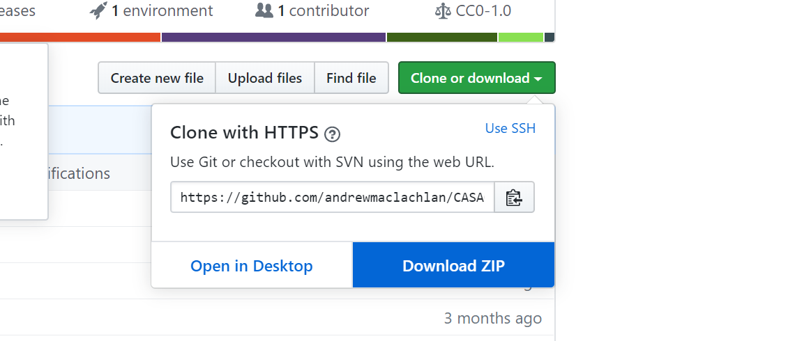

Hello Remote Sensing
Earth Observation can yield fascinating insights into geographical relationships. However, at times it can be difficult to work with. You will get lots of error messages and have software crash. The academic staff are here to help you work through these practicals but we do not know everything. It’s a good idea to become familiar with online sources of help, such as:
Learning outcomes
At the end of this module you should be able to:
Create a reproducible online portfolio workbook
Explain and evaluate common issues with urban and environmental policies at the local, national and international level that fail to consider spatial data
Revise vague and ambiguous development targets
Appropriately pre-process Earth observation imagery ready for analysis
Apply published methodologies to extract meaning from Earth observation data
Combine a variety of spatial data to demonstrate the benefits of data-informed governance and planning.
Create and design a reproducible workflow for consistent monitoring of urban and environmental metrics
Critique and optimise recently developed metropolitan climate mitigation strategies using appropriate spatial data, optimizing financial investment and environmental outcomes
There is a lot of information within this practical book and we do not expect you to read everything we link to. You should attend each lecture, go through every practical and do some associated reading.
This is a 15 credit module, equivalent to 150 hours of study (including the taught sessions). Outside of our lectures and practical sessions (4 hours a week) you should be spending an extra 11 hours a week on this module.
How to use this book
To get the most out of this book spend a few minutes learning how to control it, in the top right of this webpage you will see this tools bar:
From left to right these buttons will let you:
control the side bar
search the entire book for a specific word
change the text size, font, colour
propose an edit if you see a mistake that I can review
view the webpage in the ‘raw’ RMarkdown format, we cover RMarkdown in the course
information about shortcuts for this book and most others like it
In addition the icon in the top right of the page takes you to the GitHub repository for this book, we cover GitHub in the course, but it’s basically where the online files for the book are stored.
Getting started
One of the issues with Remote Sensing is that many of the files we will be working with are quite large. Fortunately in recent years UCL has seriously beefed up the storage available for students. You now get 100GB of free storage, which should be plenty for the work you will be doing this year! The Bartlett faculty has several gigabytes of storage space available on their central servers, so before we get started, we will connect to our N drive to carry out all of our practical work over the coming weeks.
The data we use in this practical book is representative of what you will find when conducting independent analysis. Some books and website will give you perfectly ‘clean’ and ‘ready to use’ data, we have not done this on purpose as it’s very important to master data wrangling (also called data manipulation). In the ‘real world’ data is messy and it’s vital you know how to deal with it. Take this quote from the New York Times for example…
“Data scientists, according to interviews and expert estimates, spend from 50 percent to 80 percent of their time mired in this more mundane labor of collecting and preparing unruly digital data, before it can be explored for useful nuggets.”
How to download data and files from GitHub
The majority of data required for the workshops is found online and we detail how to download this within the workshops. On occasion you may need to get some data from my GitHub, the workshops will instruct you to do this where needed.
To do so you have a few options. Option 1 will let you download just a spceific folder whilst option 2 will download everything i have used to make the workshops.
Option 1
Use DownGit
Head over to the GitHub repository: https://github.com/andrewmaclachlan/CASA0005repo
Select a folder you wish to download — here i’ll use practical data as the example, click into the folder (prac7_data) and copy the url: https://github.com/andrewmaclachlan/CASA0005repo/tree/master/prac7_data
Paste it into DownGit and click Download, once downloaded then unzip the folder.
Option 2
Go to the online repository page here: https://github.com/andrewmaclachlan/CASA0005repo
Click Clone or download, the download as ZIP. This will download the everything i have used to make this website including all the data for the practicals

Self guided learning
The lectures and practicals of this course only form a part of the learning process. You are expected to undertake wider reading and explore new methods and approaches. We have provided guidance on useful resources throughout the course to use as a starting point but you are encouraged to go beyond our recommedations and fully engage with applied GIS research, methods and visualisation techniques.
If you find a practical particularly easy or straightforward then please move on to the next one. Practicals that look at analytical relationships also have extension activities for you to try.
Interactive lectures
During the lectures we will be using an interative polling and Q&A application called vevox. It’s very simple to use, you can either:
- Download the app on iOS or Android: http://get.vevox.app
- Use the web app: https://vevox.app/
The meeting ID we will use is: 186-395-009
More help
If you need specific assistance with this course please:
Check the Moodle assessment tab for queries relating to assignments / deadlines.
Speak to a member of the teaching team in the computer lab sessions
Ask a question at the end of a lecture (time permitting)
Ask a question on slack under the Remote Sensing channel
Due to the size of the class we will only reply to messages on slack so all students can see the discussion. If you have a personal matter in relation to completing the course then please speak to or email Andy
Noticed a mistake?
No one is perfect, if you notice a mistake let us know through the GitHub issues tab
Don’t worry if you are unsure about what GitHub is we cover it in the course.
Assignment resources
Want some tips for resources on your assignment?…. head over to the Assignment resources pages
Reading list
We link to books and resources throughout each practical and in the Assignment resources pages.